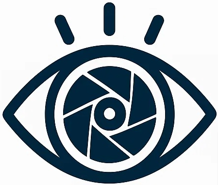

Sponsors
VQualA 2026 is supported by the IEEE Signal Processing Society Challenge Program.
About VQualA 2026
VQualA 2026: Human- and Machine-Aligned Visual Quality Assessment Challenge aims to advance reliable, interpretable, and human- and machine-aligned visual quality intelligence for next-generation AI systems.
Traditional image and video quality assessment methods have primarily been designed to characterize the perceptual experience of human observers. However, modern AI systems, including embodied agents, autonomous systems, multimodal foundation models, and large vision-language models, have become major consumers of visual data. These systems may exhibit perceptual sensitivities that differ substantially from those of human observers.
As a result, visual degradations that have limited impact on human perception may significantly affect downstream machine reasoning, navigation, recognition, generation, or decision-making. At the same time, emerging multimodal AI systems increasingly need to understand and reason about visual quality over complex and long-duration visual content.
VQualA 2026 therefore explores a new generation of visual quality assessment paradigms that jointly consider human perception, machine perception, and multimodal reasoning.
The challenge is organized under the IEEE Signal Processing Society Challenge Program and promotes reproducible benchmarking, publicly accessible datasets, standardized evaluation protocols, and open scientific dissemination.
VQualA 2026 Challenges
-
MPD: Machine-oriented Image Quality Assessment Challenge
This track focuses on machine-centric perceptual quality assessment for intelligent agents and embodied AI systems. It investigates how visual distortions affect machine perception and downstream intelligent tasks, with an emphasis on machine-oriented quality prediction and task-aware perceptual evaluation.
Participants will develop methods capable of predicting multi-dimensional quality preferences aligned with machine intelligence requirements.
-
LongVQU-Eval: Long-Term Video Quality Understanding Evaluation
This track evaluates the ability of large vision-language models to understand, reason about, and explain perceptual quality degradations across long-duration videos.
Participants will address challenges including temporal distortion localization, cross-event quality reasoning, distortion attribution, and holistic long-video perceptual understanding.
Please visit the corresponding competition page to learn more about each challenge, access the competition materials, and participate.
Important Dates
Competition Timeline
- Challenge launch and training data release: September 20, 2026
- Registration deadline: October 15, 2026. Submit Codabench handle and team member names/affiliations.
- Test set release: October 15, 2026
- Test-set results submission deadline: October 30, 2026
- Methodology report and open-source model weights due: November 4, 2026. This requirement applies to all participants.
- Challenge results announcement: November 20, 2026
- Top-3 teams only: November 30, 2026. Camera-ready 4-6 page description of the approach and open-source code due.
All deadlines are 23:59 AoE unless stated otherwise.
List of Organizers


Awards
VQualA 2026 is supported by the IEEE Signal Processing Society Challenge Program. The challenge includes a total prize pool of USD 5,000.
- Overall Best Challenge Solution: USD 2,000
- Best Student Team: USD 1,500
- Best Reproducible Method: USD 1,000
- Best Open-Source Contribution: USD 500
Previous Edition
The first VQualA was held in conjunction with ICCV 2025.